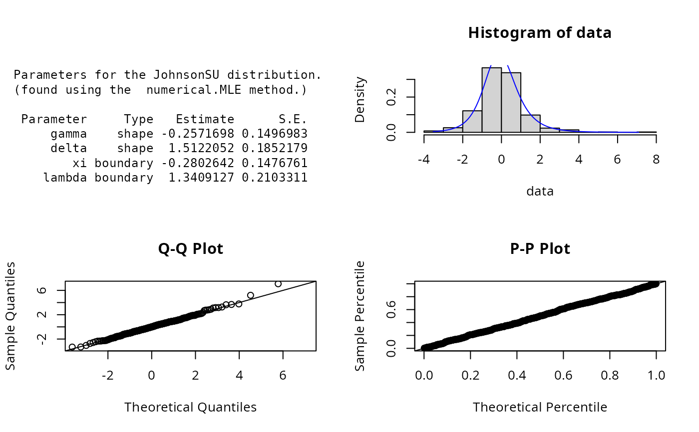

JohnsonSU.RdDensity, distribution, quantile, random number generation and parameter estimation functions for the Johnson SU (unbounded support) distribution. Parameter estimation can be based on a weighted or unweighted i.i.d sample and can be carried out numerically.
dJohnsonSU(
x,
gamma = -0.5,
delta = 2,
xi = -0.5,
lambda = 2,
params = list(gamma = -0.5, delta = 2, xi = -0.5, lambda = 2),
...
)
pJohnsonSU(
q,
gamma = -0.5,
delta = 2,
xi = -0.5,
lambda = 2,
params = list(gamma = -0.5, delta = 2, xi = -0.5, lambda = 2),
...
)
qJohnsonSU(
p,
gamma = -0.5,
delta = 2,
xi = -0.5,
lambda = 2,
params = list(gamma = -0.5, delta = 2, xi = -0.5, lambda = 2),
...
)
rJohnsonSU(
n,
gamma = -0.5,
delta = 2,
xi = -0.5,
lambda = 2,
params = list(gamma = -0.5, delta = 2, xi = -0.5, lambda = 2),
...
)
eJohnsonSU(X, w, method = "numerical.MLE", ...)
lJohnsonSU(
X,
w,
gamma = -0.5,
delta = 2,
xi = -0.5,
lambda = 2,
params = list(gamma = -0.5, delta = 2, xi = -0.5, lambda = 2),
logL = TRUE,
...
)A vector of quantiles.
Shape parameters.
Location-scale parameters.
A list that includes all named parameters.
Additional parameters.
A vector of probabilities.
Number of observations.
Sample observations.
An optional vector of sample weights.
Parameter estimation method.
logical; if TRUE, lJohnsonSU gives the log-likelihood, otherwise the likelihood is given.
dJohnsonSU gives the density, pJohnsonSU the distribution function, qJohnsonSU gives the quantile function, rJohnsonSU generates random variables, and eJohnsonSU estimates the parameters. lJohnsonSU provides the log-likelihood function.
The Johnson system of distributions consists of families of distributions that, through specified transformations, can be
reduced to the standard normal random variable. It provides a very flexible system for describing statistical distributions
and is defined by
$$z = \gamma + \delta f(Y)$$
with \(Y = (X-xi)/lambda\). The Johnson SB distribution arises when \(f(Y) = archsinh(Y)\), where \(-\infty < Y < \infty\).
This is the unbounded Johnson family since the range of Y is \((-\infty,\infty)\), Karian & Dudewicz (2011).
The JohnsonSU distribution has probability density function
$$p_X(x) = \frac{\delta}{\sqrt{2\pi((x-xi)^2 + lambda^2)}}exp[-0.5(\gamma + \delta ln(\frac{x-xi + \sqrt{(x-xi)^2 + lambda^2}}{lambda}))^2].$$
Parameter estimation can only be carried out numerically.
Johnson, N. L., Kotz, S. and Balakrishnan, N. (1994) Continuous Univariate Distributions,
volume 1, chapter 12, Wiley, New York.
Bowman, K.O., Shenton, L.R. (1983). Johnson's system of distributions. In: Encyclopedia
of Statistical Sciences, Volume 4, S. Kotz and N.L. Johnson (eds.), pp. 303-314. John
Wiley and Sons, New York.
Z. A. Karian and E. J. Dudewicz (2011) Handbook of Fitting Statistical Distributions with R, Chapman & Hall.
ExtDist for other standard distributions.
# Parameter estimation for a known distribution
X <- rJohnsonSU(n=500, gamma=-0.5, delta=2, xi=-0.5, lambda=2)
est.par <- eJohnsonSU(X); est.par
#>
#> Parameters for the JohnsonSU distribution.
#> (found using the numerical.MLE method.)
#>
#> Parameter Type Estimate S.E.
#> gamma shape -0.7009908 0.2410498
#> delta shape 1.7586049 0.2474463
#> xi boundary -0.7986035 0.2665372
#> lambda boundary 1.8119870 0.2968815
#>
#>
plot(est.par)

# Fitted density curve and histogram
den.x <- seq(min(X),max(X),length=100)
den.y <- dJohnsonSU(den.x,params = est.par)
hist(X, breaks=10, probability=TRUE, ylim = c(0,1.2*max(den.y)))
lines(den.x, den.y, col="blue")
lines(density(X), lty=2)
# Extracting shape and boundary parameters
est.par[attributes(est.par)$par.type=="shape"]
#> $gamma
#> [1] -0.7009908
#>
#> $delta
#> [1] 1.758605
#>
est.par[attributes(est.par)$par.type=="boundary"]
#> $xi
#> [1] -0.7986035
#>
#> $lambda
#> [1] 1.811987
#>
# Parameter Estimation for a distribution with unknown shape parameters
# Example from Karian, Z.A and Dudewicz, E.J. (2011) p.657.
# Parameter estimates as given by Karian & Dudewicz are:
# gamma =-0.2823, delta=1.0592, xi = -1.4475 and lambda = 4.2592 with log-likelihood = -277.1543
data <- c(1.99, -0.424, 5.61, -3.13, -2.24, -0.14, -3.32, -0.837, -1.98, -0.120,
7.81, -3.13, 1.20, 1.54, -0.594, 1.05, 0.192, -3.83, -0.522, 0.605,
0.427, 0.276, 0.784, -1.30, 0.542, -0.159, -1.66, -2.46, -1.81, -0.412,
-9.67, 6.61, -0.589, -3.42, 0.036, 0.851, -1.34, -1.22, -1.47, -0.592,
-0.311, 3.85, -4.92, -0.112, 4.22, 1.89, -0.382, 1.20, 3.21, -0.648,
-0.523, -0.882, 0.306, -0.882, -0.635, 13.2, 0.463, -2.60, 0.281, 1.00,
-0.336, -1.69, -0.484, -1.68, -0.131, -0.166, -0.266, 0.511, -0.198, 1.55,
-1.03, 2.15, 0.495, 6.37, -0.714, -1.35, -1.55, -4.79, 4.36, -1.53,
-1.51, -0.140, -1.10, -1.87, 0.095, 48.4, -0.998, -4.05, -37.9, -0.368,
5.25, 1.09, 0.274, 0.684, -0.105, 20.3, 0.311, 0.621, 3.28, 1.56)
est.par <- eJohnsonSU(data); est.par
#>
#> Parameters for the JohnsonSU distribution.
#> (found using the numerical.MLE method.)
#>
#> Parameter Type Estimate S.E.
#> gamma shape -0.2848688 0.1912544
#> delta shape 1.0000367 0.2298806
#> xi boundary -0.6712065 0.3603736
#> lambda boundary 1.6699007 0.6504748
#>
#>
plot(est.par)
# Estimates calculated by eJohnsonSU differ from those given by Karian & Dudewicz (2011).
# However, eJohnsonSU's parameter estimates appear to be an improvement, due to a larger
# log-likelihood of -250.3208 (as given by lJohnsonSU below).
# log-likelihood function
lJohnsonSU(data, param = est.par)
#> [1] -250.3208
# Evaluation of the precision using the Hessian matrix
H <- attributes(est.par)$nll.hessian
var <- solve(H)
se <- sqrt(diag(var)); se
#> gamma delta xi lambda
#> 0.1912544 0.2298806 0.3603736 0.6504748